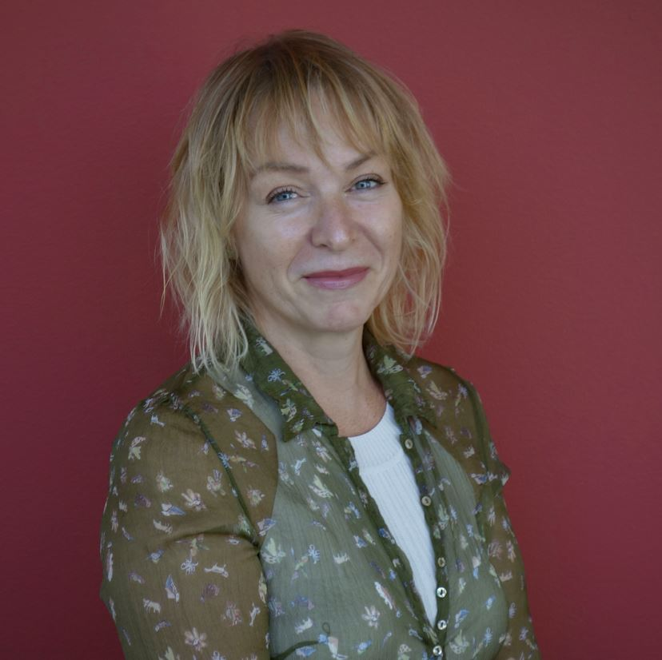
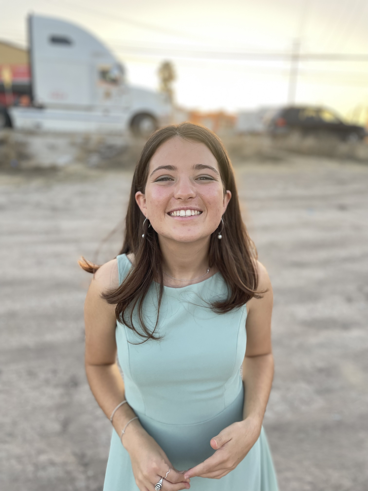
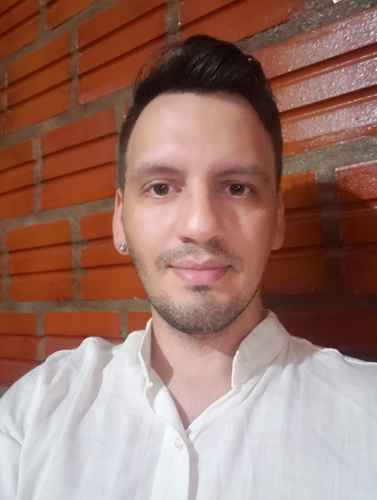
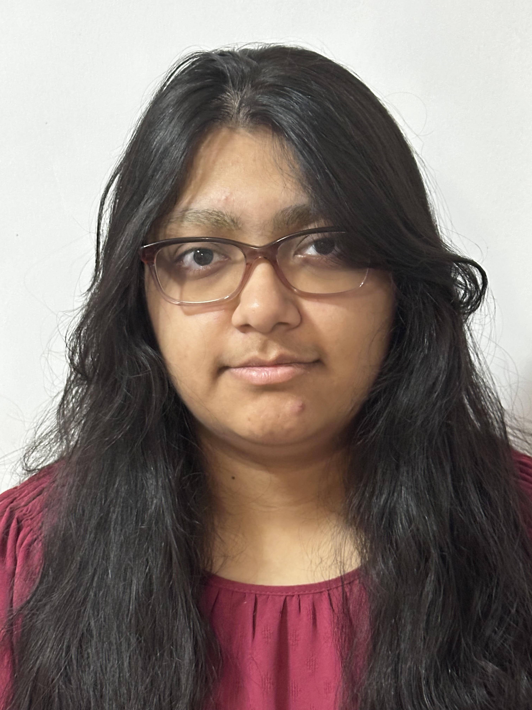
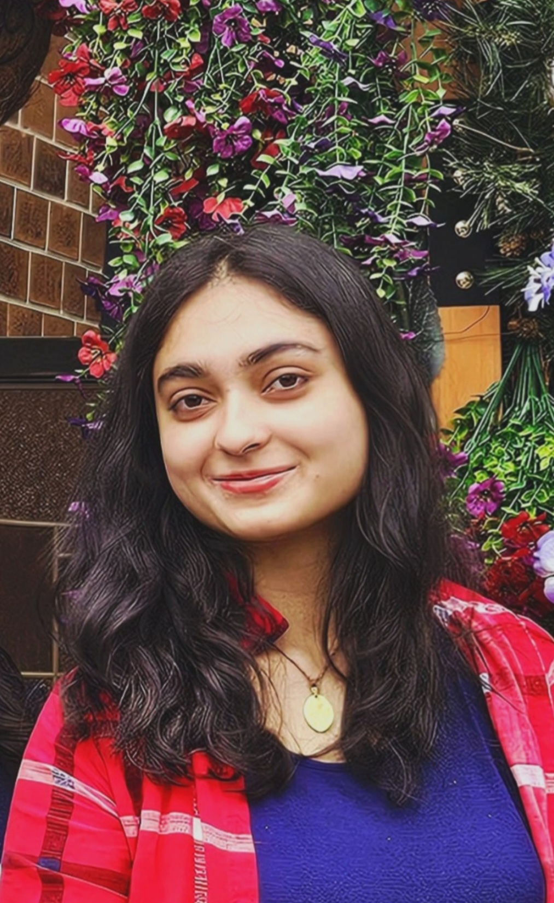
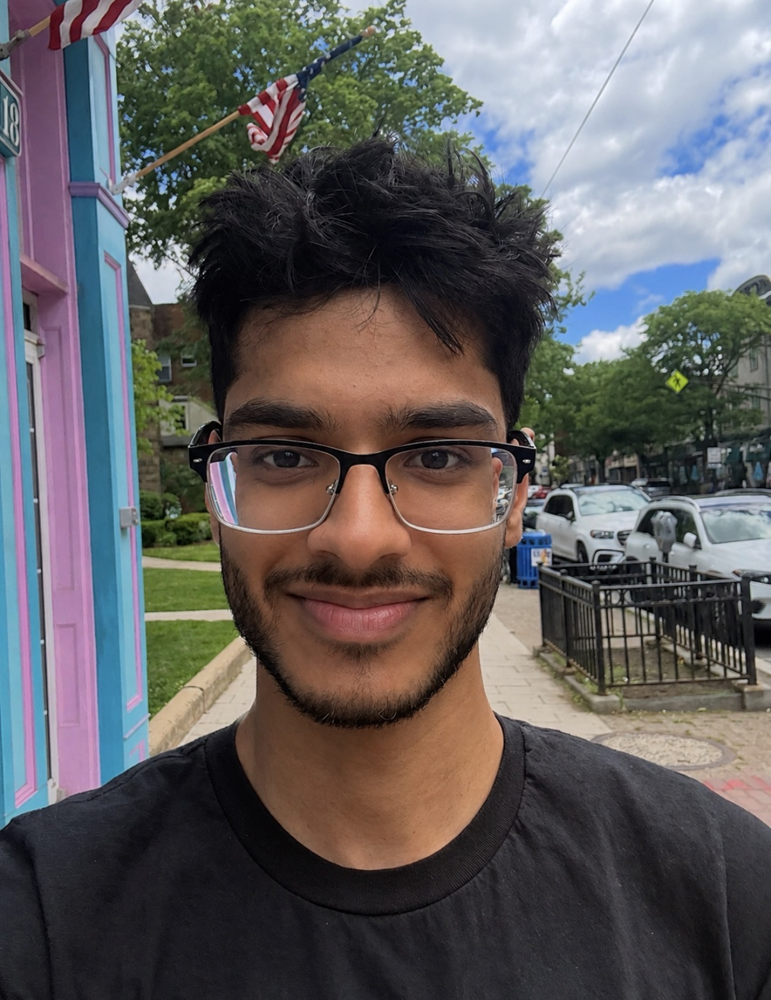
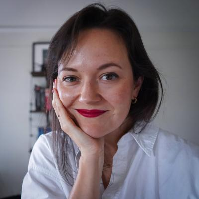

Dr. Nuria Sagarra
Director of the BLiNK Lab
Professor, Department of Spanish and Portuguese
Dr. Nuria Sagarra is a Professor in the Department of Spanish and Portuguese at Rutgers University, where she directs the BLiNK (Bilingualism: Language in NeuroKognition) Lab. She holds affiliated appointments in the Department of Pediatrics (Rutgers and Robert Wood Johnson Hospital) and the Rutgers Center for Cognitive Science. Dr. Sagarra earned her Ph.D. in Spanish Linguistics from the University of Illinois, Urbana-Champaign.
As a psycholinguist, Dr. Sagarra studies how language experience and individual differences in cognition shape the way bilinguals form associations as they process language in real time, work that aims both to deepen our understanding of human cognition and to inform how languages are taught. She draws on 35 years in language teaching and 25 years of academic leadership and research.
Dr. Sagarra’s research has been supported by the National Science Foundation and by international funders including the Spanish Ministry of Science and Innovation and the Generalitat de Catalunya, and she currently leads a Rutgers interdisciplinary research grant on the effects of language on the perception of chronic pain. She is a recipient of the Chancellor Award for Excellence in Service (Rutgers, 2026) and a Teaching Award from the Institute for Teaching Innovation and Inclusive Pedagogy (2024), and she founded iRISE, a science outreach initiative connecting Rutgers with New Jersey public schools.

Kaylee Fernandez
PhD Candidate
Kaylee’s research focuses on the cognitive factors that affect bilingual language processing. For her dissertation, she is examining how listeners use prosody as a predictive cue during comprehension, using eye-tracking and EEG. She helped develop a game that trains second-language learners of Spanish to perceive lexical stress, built in the BLiNK Lab in collaboration with the Centre for Languages and Literature, Lund University, Sweden. She holds a B.A. in Spanish from the University of Florida, an M.A. in Teaching Spanish as a Second Language from the Universidad de Sevilla, and an M.Ed. in Applied Linguistics from Teachers College, Columbia University, and a Graduate Certificate in Cognitive Science from Rutgers University. She is a recipient of the University & Louis Bevier Fellowship and has over a decade of teaching experience.

Eva Maria Corregidor Luna
PhD Student
Eva’s research focuses on neurolinguistics and the relationship between bilingualism and emotion. She holds an M.A. in Spanish from San Diego State University and a B.A. in Modern Languages and Translation from the Universidad de Alcalá de Henares. Since 2021, she has taught college-level Spanish, literature, and linguistics courses, and she collaborates with the Language Bank at Rutgers University, providing translation and interpreting services to local non-profits, social-service organizations, and outreach initiatives.

Héctor Wiscow
PhD Student
Héctor studies the cognitive science of bilingualism, with interests in the Foreign Language Effect, emotion, and the bilingual brain. He holds a B.A. in Foreign Language Teacher Education from Argentina and an M.A. in Spanish Language and Literatures from the University of Arkansas, Fayetteville. In 2020, he was awarded a Fulbright Scholarship as a Foreign Language Teaching Assistant in the United States, where he also served as a cultural ambassador for Argentina.

Krupa Bhagat
Krupa is an undergraduate at Rutgers majoring in Cell Biology and Neuroscience with a double minor in Psychology and Art. She is interested in how the body’s physiological processes interact, as well as in predictive language processing.

Anushka Dalal
Anushka is an undergraduate at Rutgers University majoring in Biological Sciences and minoring in Psychology. She is interested in bilingualism and the cognitive processes that influence pain perception and patient experiences.

Anthony Maldonado
Anthony is an undergraduate at Rutgers University-New Brunswick pursuing a B.S. in Cell Biology and Neuroscience with a minor in Spanish. He is interested in bilingualism and its practical applications in managing chronic clinical conditions.

Adarsh Patel
Adarsh is an undergraduate at Rutgers University-New Brunswick majoring in Cell Biology and Neuroscience with a minor in Data Science. His interests lie at the intersection of language, cognition, neuroscience, and health.

Ibrahim Siddiqui
Ibrahim is an undergraduate at Rutgers University majoring in Psychology with a minor in Biology. His interests include cognitive neuroscience, memory, attention, and the neural mechanisms underlying behavior.

Dr. Ezequiel M. Durand-López
Assistant Professor
of Hispanic Linguistics, College of Charleston
Dr. Durand-López specializes in Spanish morphology, psycholinguistics, and second language acquisition. His work examines how second language learners process word structure and gender agreement, and how working memory modulates these processes, combining behavioral methods with transcranial direct-current stimulation (tDCS). His broader interests span morphology, morphosyntax, and the cognitive psychology of language learning.

Dr. Cristina Lozano-Argüelles
Assistant
Professor, John Jay College of Criminal Justice (CUNY)
Dr. Lozano-Argüelles studies how interpreting experience shapes second language processing, with a focus on the predictive strategies that distinguish professional interpreters from other bilinguals. Her eye-tracking work shows how the cognitive demands of simultaneous interpretation can sharpen anticipatory processing and attentional control. Her current projects bridge theory and practice: developing placement assessments for heritage speakers of Spanish (U.S. Department of Education) and designing a bilingual curriculum for Criminal Justice majors (National Science Foundation).

Daniel Marotta
Daniel is a graduate of Rutgers University with a B.A. in Cell Biology and Neuroscience. He is interested in the neural correlates of information processing, learning, and memory, and plans to continue this research as a fellow at the National Institutes of Health.

Bilingualism: Language in NeuroKognition, Department of Spanish & Portuguese, Rutgers University.